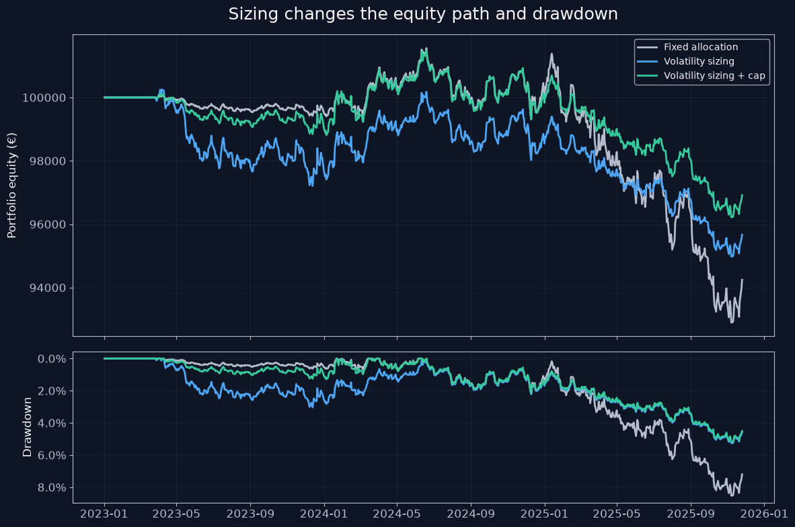

Position Sizing and Risk Management for Systematic Trading
ISMF Algo-Trading Bootcamp — Dylan Sinnott
We compare three ways of sizing the same trading signal:
Fixed 10% allocation.
Volatility-based sizing with a 2% annual standalone risk target.
The same volatility-based sizing with a 20% position cap.
We use reproducible synthetic data to illustrate the mechanics. The results are not evidence of a profitable trading strategy.
How to use this notebook
Run the cells from top to bottom.
Requirements: Python, NumPy, pandas and Matplotlib.
The example uses one synthetic asset and a constant long signal. This isolates the effect of position sizing from signal generation.
All three methods use the same prices, execution timing and cost model. The 2% target refers to annual standalone volatility relative to portfolio equity. It is not a maximum loss.
The illustrative limits and parameters are purely hypothetical examples.
from pathlib import Pathimport numpy as npimport pandas as pdimport matplotlib.pyplot as pltfrom matplotlib.ticker import PercentFormatter# Model settingsTRADING_DAYS =252LOOKBACK =60INITIAL_EQUITY =100_000RISK_TARGET =0.02FIXED_WEIGHT =0.10POSITION_CAP =0.20COST_RATE =0.001# Illustrative one-way cost: 10 basis points# Save exported charts hereOUTPUT_DIR = Path("outputs")OUTPUT_DIR.mkdir(exist_ok=True)# Match the presentationBG ="#0E1525"WHITE ="#F5F7FA"GREY ="#B4BDCB"BLUE ="#4EA5F5"GREEN ="#36C99B"RED ="#F16B75"plt.rcParams.update({"figure.facecolor": BG,"axes.facecolor": BG,"axes.edgecolor": GREY,"axes.labelcolor": WHITE,"text.color": WHITE,"xtick.color": GREY,"ytick.color": GREY,"grid.color": "#344256","font.size": 12,"savefig.facecolor": BG,})print("Setup complete.")
Setup complete.
1. Synthetic market data
We simulate three consecutive volatility regimes: - Low volatility: 5% annualised. - Moderate volatility: 20% annualised. - High volatility: 40% annualised.
These are simulation inputs, not values supplied to the sizing rule. The strategy must estimate volatility from observed past returns.
We hold the signal constant at +1 (long) to isolate the effect of sizing.
# Fix the seed so the example reproduces the same simulated path.# The seed is not selected to optimise strategy performance.rng = np.random.default_rng(42)days_per_regime =252# Simulation inputs change in three regimes.# The sizing rule cannot observe these inputs; it uses rolling estimates.annual_vol = np.repeat( [0.05, 0.20, 0.40], days_per_regime)n_days =len(annual_vol)# Include an initial price before the first simulated returndates = pd.bdate_range("2023-01-02", periods=n_days +1)# Zero expected daily return: no predictive edge is assumedsimulated_returns = rng.normal( loc=0.0, scale=annual_vol / np.sqrt(TRADING_DAYS))prices = pd.Series( np.r_[50.0, 50.0* np.cumprod(1+ simulated_returns)], index=dates, name="price")data = prices.to_frame()data["return"] = data["price"].pct_change()data["input_annual_vol"] = np.r_[np.nan, annual_vol]# Keep direction constant to isolate sizing behaviour.# No predictive trading edge is assumed.data["signal"] =1.0# Estimate volatility from the latest 60 observed daily returns.# Annualise using the same 252-day convention as the risk target.data["estimated_annual_vol"] = ( data["return"] .rolling(LOOKBACK, min_periods=LOOKBACK) .std(ddof=1)* np.sqrt(TRADING_DAYS))data.tail()
The rolling estimate responds gradually to regime changes because its window contains both older and newer observations.
The dashed line is known only because we generated the data. In a real market, the underlying volatility is not directly observable.
A shorter lookback responds faster but produces a noisier estimate. A longer lookback is smoother but reacts more slowly.
2. From volatility estimates to target weights
We compare: - A fixed 10% allocation. - A 2% annual standalone risk target divided by estimated volatility. - The same volatility sizing, capped at 20%.
All methods stay in cash until the 60-return estimation window is available. These are target weights calculated at each observation, before execution.
# Only size positions when the volatility estimate is valid.# Require a complete lookback window and a positive volatility estimate.# All methods remain in cash until this condition is met.valid_vol = ( data["estimated_annual_vol"].notna()& (data["estimated_annual_vol"] >0))target_weights = pd.DataFrame(index=data.index)target_weights["Fixed allocation"] = ( FIXED_WEIGHT * data["signal"]).where(valid_vol, 0.0)target_weights["Volatility sizing"] = ( data["signal"]* RISK_TARGET/ data["estimated_annual_vol"].where(valid_vol)).fillna(0.0)# Limit the magnitude of the target weight to 20%.# When this binds, the original standalone volatility target is not met.target_weights["Volatility sizing + cap"] = ( target_weights["Volatility sizing"] .clip(lower=-POSITION_CAP, upper=POSITION_CAP))target_weights.tail().round(4)
Fixed allocation
Volatility sizing
Volatility sizing + cap
2025-11-19
0.1
0.0492
0.0492
2025-11-20
0.1
0.0496
0.0496
2025-11-21
0.1
0.0491
0.0491
2025-11-24
0.1
0.0478
0.0478
2025-11-25
0.1
0.0473
0.0473
Interpretation
The fixed method targets 10% throughout the evaluation period.
Volatility sizing increases exposure when estimated volatility is low and reduces it when estimated volatility is high.
The capped method limits target exposure to 20%. Its line overlaps the unconstrained method whenever the cap does not bind.
colours = {"Fixed allocation": GREY,"Volatility sizing": BLUE,"Volatility sizing + cap": GREEN,}fig, ax = plt.subplots(figsize=(12, 5))for method in target_weights.columns: ax.plot( target_weights.index, target_weights[method], color=colours[method], linewidth=2, label=method )ax.axhline( POSITION_CAP, color=RED, linestyle=":", linewidth=1.5, label="20% position cap")ax.set_title("The same signal produces different position sizes", fontsize=18, pad=16)ax.set_ylabel("Target weight")ax.yaxis.set_major_formatter(PercentFormatter(1.0))ax.grid(alpha=0.3)ax.legend( facecolor=BG, edgecolor=GREY, labelcolor=WHITE, fontsize=10)fig.tight_layout()fig.savefig( OUTPUT_DIR /"target_weights.png", dpi=200, bbox_inches="tight")plt.show()
Cap binds on 30.7% of valid sizing dates.
Checks passed.
3. Execution, costs and portfolio performance
Timing: - Calculate each target using information available after the close. - Execute it at the following day’s close. - The new holding earns returns after execution.
Assumptions: - Fractional shares and full fills are permitted. - Execution costs equal 0.1% of absolute traded value. - Cash earns no interest. - Financing costs, market impact and taxes are excluded. - Targets are sized using equity immediately before execution costs. - Positions remain open at the end; no final liquidation cost is charged.
Timing example
After Monday’s close: calculate a target using information through Monday.
At Tuesday’s close: execute that target.
From Tuesday’s close to Wednesday’s close: the new holding earns its first price return.
Tuesday’s closing price is used as the assumed execution price. Full execution at that price is a modelling assumption.
def run_backtest(prices, targets): cash =float(INITIAL_EQUITY) shares =0.0 previous_equity =float(INITIAL_EQUITY) records = []# Execute yesterday's target at today's close.# Existing shares earn the price move into today's close;# newly purchased shares earn price changes only after execution. execution_targets = targets.shift(1).fillna(0.0)for date, price in prices.items():# Mark existing holdings to today's closing price equity_before_cost = cash + shares * price# Calculate the desired shares using pre-cost equity weight = execution_targets.loc[date]# Size using equity before costs. Costs slightly change the resulting post-trade weight, so the cap is a target-weight cap in this example. desired_shares = weight * equity_before_cost / price# Trade the difference from actual holdings, including price-driven drift.# A constant target weight can therefore still require rebalancing. trade_shares = desired_shares - shares trade_value = trade_shares * price cost =abs(trade_value) * COST_RATE# Execute the trade and pay its cost cash -= trade_value + cost shares = desired_shares equity = cash + shares * price records.append({"date": date,"equity": equity,"net_return": equity / previous_equity -1,"turnover": abs(trade_value) / equity_before_cost,"cost": cost,"shares": shares,"actual_weight": shares * price / equity, }) previous_equity = equity result = pd.DataFrame(records).set_index("date")# Positive drawdown convention, matching the slides result["drawdown"] = (1- result["equity"] / result["equity"].cummax() )return resultbacktests = { method: run_backtest(data["price"], target_weights[method])for method in target_weights.columns}print("All three backtests completed.")
All three backtests completed.
4. Performance metrics
Total net return: change in equity over the simulation, after execution costs.
Annualised volatility: sample standard deviation of daily net returns multiplied by the square root of 252.
Maximum drawdown: largest percentage decline from a previous equity peak. Drawdown is reported as a positive loss percentage.
Annualised turnover: average daily absolute traded value divided by pre-trade equity, multiplied by 252. Purchases and sales both count.
Total costs: sum of modelled execution costs in euros.
Volatility and turnover use the common evaluation period beginning on the first execution date. Initial entry costs are included. No final liquidation is performed.
fig, axes = plt.subplots(2, 1, figsize=(12, 8), sharex=True, gridspec_kw={"height_ratios": [2, 1]})for method, result in backtests.items(): axes[0].plot( result.index, result["equity"], color=colours[method], linewidth=2, label=method ) axes[1].plot( result.index, result["drawdown"], color=colours[method], linewidth=2 )axes[0].set_title("Sizing changes the equity path and drawdown", fontsize=18, pad=16)axes[0].set_ylabel("Portfolio equity (€)")axes[1].set_ylabel("Drawdown")axes[1].yaxis.set_major_formatter(PercentFormatter(1.0))# Larger drawdowns appear lower on the chartaxes[1].invert_yaxis()for ax in axes: ax.grid(alpha=0.3)axes[0].legend( facecolor=BG, edgecolor=GREY, labelcolor=WHITE, fontsize=10)fig.tight_layout()fig.savefig( OUTPUT_DIR /"equity_and_drawdown.png", dpi=200, bbox_inches="tight")plt.show()

for method, result in backtests.items():assert np.isfinite( result[["equity", "net_return", "turnover"]].to_numpy() ).all()assert (result["equity"] >0).all()assert (result["cost"] >=0).all()assert (result["drawdown"] >=-1e-12).all()# No holdings before the first executable targetassert ( result.loc[result.index < evaluation_start, "shares"] ==0 ).all()print("Checks passed.")
Checks passed.
5. Findings and limitations
On this simulated path, volatility sizing reduced realised volatility and maximum drawdown relative to the fixed allocation, but increased turnover.
The position cap reduced low-volatility exposure and turnover relative to unconstrained volatility sizing.
All three methods lost money. Position sizing changes risk exposure; it does not create a predictive edge.
These results come from one synthetic path. They do not establish that one method is consistently superior. Average exposures differ across methods.
The model excludes jumps, changing liquidity, partial fills, financing, taxes and realistic market impact. Cash earns no interest.
The notebook implements single-asset sizing and a position cap. It does not implement the lecture’s sector limits, multi-asset correlation checks, portfolio leverage limits or drawdown-response policies.